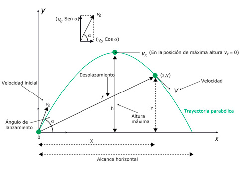
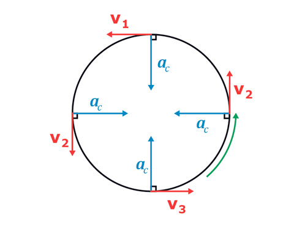

La aceleración, la velocidad y la fuerza, entre otras, son magnitudes vectoriales, además de un valor, tienen dirección y sentido. Por eso, las operaciones con ellas, como la suma o la resta, son distintas a las que hemos estado acostumbrados a realizar, con las magnitudes escalares. Para realizar este tipo de cálculos con magnitudes vectoriales se debe, necesariamente, usar una herramienta matemática llamada vector.
-
01
Componentes de un vector
Open or CloseRecuerda
Las magnitudes escalares son aquellas que presentan un valor acompañado de la unidad correspondiente. La masa, el volumen o la temperatura son magnitudes escalares.
En cambio, las magnitudes vectoriales se encuentran asociadas a una dirección y un sentido (aunque un vector orientado en una determinada dirección puede presentar dos sentidos distintos). Por tanto, su representación gráfica es un vector.
De esta manera, vamos a estudiar, inicialmente, cómo se descomponen los vectores y de qué manera sus componentes pueden llegar a formar otro vector (resultante). Para esto es importante recordar en qué consiste la operación de suma de estas magnitudes, por lo que comenzamos ubicando los vectores en el sistema coordenado cartesiano.
Suma de los vectores A y B en el sistema de coordenadas cartesiano (x, y).
De esta forma, encontramos que la suma vectorial que aparece en la imagen es una construcción en dos dimensiones, pues están involucrados los ejes cartesianos x y y. De los dos vectores originales A y B ha resultado un nuevo vector R.
Si se realiza un análisis inverso al anterior, al suponer que el vector que tenemos, originalmente, es R, es posible realizar una "descomposición" de R obteniendo sus "partes", las cuales son proyecciones del vector sobre cada uno de los ejes cartesianos; estas se conocen como componentes.
Rx y Ry se expresan como las componentes del vector R en el eje horizontal y vertical respectivamente, de modo que
Las componentes de un vector se ubican sobre cada uno de los ejes coordenados. Se pueden representar entre paréntesis y separadas por comas, para el caso del plano bidimensional R = (Rx , Ry).
Si observas bien, al realizar la operación sobre la gráfica, se ha formado un triángulo rectángulo, en el que los catetos corresponden a la magnitud de las componentes Rx y Ry la hipotenusa a la magnitud del vector R. Por esta razón, es posible utilizar el teorema de Pitágoras para calcular la magnitud de R si se conocen las componentes, y también de usar las razones trigonométricas, comúnmente seno y coseno, para hallar las componentes Rx y Ry.
Dirección de las componentes de un vector
Las componentes de un vector tienen las mismas unidades que el vector del cual han sido extraídas. Como son proyecciones sobre los ejes vertical y horizontal, también se debe especificar su dirección con el signo respectivo, con la siguiente convención:
Dirigidas hacia arriba o hacia la derecha tendrán signo positivo.
Dirigidas hacia abajo o hacia la izquierda tendrán signo negativo.
El avión viaja con una trayectoria curvilínea y su vector velocidad v en un determinado instante es tangente a la curva. El vector velocidad v se ubica en un sistema de coordenadas cartesianas, luego se realizan las proyecciones sobre cada uno de los ejes (x, y) y, finalmente, se tienen las componentes de la velocidad vx y vy.
Recuerda
Los vectores (que estudiamos) están relacionados con situaciones en un plano, es decir, en dos dimensiones, luego las componentes que utilizaremos serán solo las proyecciones en los ejes x y y.
Sin embargo, al trabajar cantidades vectoriales en el espacio (x, y, z) se tendría una componente adicional a lo largo del eje z, es decir, tres dimensiones.
Profundiza
01.1Consolidación
Actividades para consolidar lo que has aprendido en esta sección.
-
02
El movimiento parabólico
Open or CloseA un objeto que es lanzado con cierta inclinación respecto a la horizontal, como un balón impulsado por un jugador de baloncesto para hacer una canasta, le es transmitida una velocidad inicial, y gracias a la inercia adquirida puede continuar avanzando hasta recorrer una distancia horizontal determinada.
Sin embargo, al encontrarse bajo la acción del campo gravitacional terrestre, el objeto experimenta de manera simultánea una fuerza de atracción vertical descendente que lo obliga a dirigirse hacia abajo. Como resultado de su movimiento, horizontal y vertical, la trayectoria que sigue es parabólica.
Para realizar un buen lanzamiento este jugador de baloncesto debe calcular el ángulo apropiado que el balón forma con la horizontal. Una vez ha sido impulsado con una velocidad inicial, proporcionada por el jugador, el balón describe una trayectoria parabólica.
Como el cuerpo avanza horizontalmente (a lo largo del eje x) al mismo tiempo que presenta un movimiento vertical (a lo largo del eje y), se trata de un movimiento en dos dimensiones, es decir, para describirlo se necesitan dos componentes (x , y).
Un cuerpo, en presencia de un campo gravitacional, describe una trayectoria parabólica al ser lanzado con una velocidad inicial v0 formando un ángulo ? con la horizontal. Las componentes correspondientes son v0x y v0y.
En la dirección horizontal, el cuerpo continúa su movimiento gracias a la inercia generada por el impulso dado inicialmente, además el movimiento que presenta en el eje x es rectilíneo uniforme. Mientras que en la dirección vertical, debido a la acción de la gravedad, experimenta un lanzamiento vertical y una, posterior, caída libre.
Las componentes de la velocidad en el movimiento parabólico
La velocidad inicialv0 presenta dos componentes:
Velocidad inicial horizontal v0x
Velocidad inicial vertical v0y
Por tanto, es necesario recurrir a las razones trigonométricas para encontrar las componentes del vector velocidad inicial a partir del ángulo de lanzamiento ?:
Según las componentes de la velocidad del movimiento parabólico, se puede determinar el uso de las ecuaciones conocidas de movimiento rectilíneo uniforme para la componente horizontal y las de caída libre para la componente vertical del lanzamiento parabólico.

Recuerda
Si se considera que el movimiento de un proyectil ocurre en el vacío, es decir, se desprecia el efecto de la resistencia del aire dado que, al ser considerado este efecto, el cuerpo avanza menores distancias tanto de manera horizontal como vertical.
En un movimiento parabólico, la componente vertical de la velocidad vy alcanza una magnitud cero en la posición de máxima altura; por tanto, el vector velocidad en ese punto está determinado solo por la componente horizontal vx. Esto ocurre debido al comportamiento del movimiento en el eje vertical, el cual es equivalente a un lanzamiento vertical y su posterior caída libre.
El vector desplazamiento en el movimiento parabólico
Para especificar la posición respecto a un sistema de referencia particular, es decir, el vector posición de un objeto que describe un movimiento parabólico, es necesario conocer la información del avance horizontal x y de la altura y en un instante de tiempo dado (por esto es un movimiento en dos dimensiones).
Por tanto, la magnitud del desplazamiento r del cuerpo puede ser determinada por:
En el movimiento parabólico es importante conocer la altura máxima ymax y el alcance horizontal xmax.
La altura máxima es la posición en la cual la componente vertical de la velocidad vy se hace cero, luego
El alcance horizontal es la distancia horizontal que recorre el móvil a lo largo del eje x. Se calcula utilizando el tiempo de vuelo (2t)

En donde t es el tiempo que tarda el objeto en alcanzar la altura máxima.
Cuando el ángulo de lanzamiento ? es igual a cero, la velocidad inicial solamente posee un componente horizontal v0x (v0y = 0) y la trayectoria que sigue el cuerpo es semiparabólica.
Profundiza
02.1Consolidación
Actividades para consolidar lo que has aprendido en esta sección.
-
03
El movimiento circular
Open or CloseAlgunos objetos describen trayectorias circulares, lo pueden hacer de tal manera que la magnitud del vector velocidad es constante en cada punto de la circunferencia descrita, a este movimiento lo llamamos circular uniforme, o por el contrario, si el móvil incrementa o disminuye de forma constante esta magnitud se trata de un movimiento circular uniformemente acelerado .
En un movimiento circular la trayectoria que describe el móvil es una circunferencia, con centro de giro y radio constantes.
Una persona ubicada en cualquier posición de la atracción mecánica experimenta un movimiento circular.
En el estudio del movimiento circular intervienen las siguientes magnitudes:
-
Desplazamiento angular ??: está determinado por el ángulo ? que forman los dos radios de la circunferencia
correspondientes a los extremos del arco recorrido. Se mide en radianes
(rad).
-
Distancia recorrida s: corresponde a la longitud de arco recorrida por el cuerpo
durante su movimiento por la trayectoria circular de radio R. Se mide en unidades de longitud, usualmente metros (m).
Cuando el cuerpo termina una vuelta completa, -
Velocidad angular ?: es la variación del ángulo barrido, es decir, el desplazamiento angular respecto al tiempo transcurrido.
Se mide en radianes sobre segundo (rad/s).
Otra forma de expresar la velocidad angular es en revoluciones por unidad de tiempo (rev/s). Una revolución es una vuelta completa y, por tanto, equivale a 2? rad. -
Velocidad lineal o tangencial v: su magnitud es la longitud del arco recorrido
por unidad de tiempo. Usualmente se mide en m/s.
- El vector velocidad lineal es tangente a la circunferencia en cada instante del movimiento.
- La velocidad lineal y la velocidad angular están relacionadas por la siguiente ecuación:
- Periodo T: es el tiempo que transcurre hasta dar una vuelta completa. Se mide en s.
-
Frecuencia f: es el número de vueltas recorridas por unidad de tiempo.
El periodo es el inverso de la frecuencia, pues a medida que este se incrementa (es decir, entre mayor sea el tiempo que tarda en dar una vuelta) disminuye el número de revoluciones que se pueden presentar.
Ambas magnitudes se relacionan por la expresión:
La frecuencia se mide en número de vueltas por segundo (1/s) o revoluciones por minuto (rpm). También puede expresarse en s-1 dado que el número de revoluciones no corresponde estrictamente a una magnitud física.
- La relación de la velocidad angular? con el periodo y la frecuencia se expresa mediante la siguiente ecuación:
- El periodo también se relaciona con la velocidad
lineal, considerando el movimiento durante una revolución
completa, a partir de la siguiente expresión:

Las variables que interviene en el movimiento circular uniforme. Los satélites artificiales que giran alrededor de la Tierra tienen una trayectoria aproximadamente circular.
Desplazamiento angular y distancia recorrida
El radián?? permite obtener la equivalencia entre el desplazamiento angular y la longitud del arco recorrido s de un modo sencillo, multiplicando o dividiendo por el radio de la circunferencia.
Por ejemplo, si un móvil realiza un movimiento circular de radio R = 2 m y su desplazamiento angular es ? = 2,3 radianes, la longitud del arco recorrido será:
Si, en cambio, la distancia recorrida es s = 5 m, la posición angular será:
Profundiza
03.1Movimiento circular uniforme
En esta sección estudiarás movimientos con trayectorias circulares, en los cuales tanto la velocidad angular como la velocidad tangencial tienen magnitud constante.
El movimiento circular uniforme MCU se caracteriza por tener velocidad angular constante ?. Las agujas de un reloj realizan este tipo de movimiento, al igual que la Luna al orbitar alrededor de la Tierra. En ambos casos, los objetos recorren desplazamientos angulares iguales en tiempos iguales.
Como el móvil cubre la misma longitud de arco en un mismo intervalo de tiempo, la magnitud de la velocidad lineal también es constante. Sin embargo, dado que la dirección del vector velocidad lineal cambia en cada punto, se genera una aceleración dirigida hacia el centro de la circunferencia, denominada aceleración centrípeta ac.
Movimiento circular uniforme
La aceleración centrípeta se origina por la variación de la velocidad lineal respecto al tiempo.
Dicha variación se debe solo al cambio de dirección de la velocidad, pues su magnitud permanece constante.
Al realizar la resta de los vectores velocidad lineal en dos posiciones distintas v2 - v1 se obtiene la variación ?v, y debido a que la aceleración a ? ?v, tendrán la misma dirección. Lo anterior origina la aceleración centrípeta dirigida hacia el centro de la circunferencia descrita.
Esta aceleración centrípeta es constante y su magnitud se calcula de la siguiente manera:
En donde v es la velocidad lineal en un instante determinado, R es el radio de la circunferencia y ? es la velocidad angular.
03.2El movimiento circular uniformemente acelerado
A diferencia del movimiento circular uniforme, la velocidad angular ? es variable en el tiempo, esto conlleva la existencia de una aceleración angular ?.
Este tipo de movimiento lo podemos observar, por ejemplo, en la rueda de un automóvil o de una bicicleta que empieza a moverse, o en los asientos de una noria de un parque de atracciones hasta que la rueda alcanza una velocidad constante.

Este cuerpo varía tanto en la magnitud del vector velocidad como en su dirección, entre 1?s y 2?s, es decir acelera. Si este incremento se repite cada segundo posterior, entonces decimos que se trata de un movimiento uniformemente acelerado.
En analogía con un movimiento rectilíneo uniformemente acelerado, la aceleración angular permanece constante, lo que permite realizar una comparación entre los dos movimientos.
En el movimiento circular uniformemente acelerado se presentan dos componentes para la aceleración:
-
Aceleración tangencial at se relaciona con la variación en la magnitud del vector velocidad lineal (o
velocidad tangencial):
- Aceleración centrípeta ac se relaciona con la variación en la dirección del vector velocidad:
La aceleración en un movimiento uniformemente variado posee dos componentes: una tangencial asociada al cambio de magnitud de la velocidad lineal v y una centrípeta relacionada con el cambio de dirección.
Dado que estas componentes son perpendiculares entre sí, es posible hacer uso del teorema de Pitágoras para hallar la magnitud de la aceleración "total":
03.3Consolidación
Actividades para consolidar lo que has aprendido en esta sección.
-
Desplazamiento angular ??: está determinado por el ángulo ? que forman los dos radios de la circunferencia
correspondientes a los extremos del arco recorrido. Se mide en radianes
(rad).
-
04
El movimiento planetario
Open or Close04.1Modelos del universo
El interés por observar el movimiento de los planetas es conocido desde la Antigüedad, entre otras cosas, porque era muy útil para determinar la posición de los barcos o establecer las rutas de navegación. Sin embargo, resultaba fácil interpretar esas observaciones. A lo largo de la historia, muchos científicos se preguntaron cómo se disponían los planetas y las estrellas en el universo. Los dos modelos principales fueron desarrollados por Ptolomeo y Copérnico.
04.1.1Modelo de Ptolomeo
Ptolomeo fue un astrónomo, matemático y geógrafo griego del siglo II d. C., quien propuso que la Tierra se mantenía fija en el centro del universo y estaba rodeada por numerosas esferas que giraban a su alrededor. Los planetas estaban situados en estas "esferas" y realizaban pequeños movimientos circulares (epiciclos). La esfera más grande, la de las estrellas fijas, envolvía todo el cosmos. Ptolomeo explicaba el movimiento de los astros tal como se observa desde la Tierra.
Por suponer que nuestro planeta era el centro del universo, el modelo que propuso Ptolomeo en el año 140 d. C. se conoce como teoría geocéntrica.
04.1.2El modelo de Copérnico
Copérnico fue un astrónomo, médico y político polaco del Renacimiento, que formuló la teoría heliocéntrica en el siglo XVI. Según los datos recogidos en sus observaciones, las posiciones de los planetas se explicaban mucho mejor suponiendo que estos giraban alrededor del Sol, en vez de hacerlo alrededor de la Tierra. Copérnico mantuvo algunos principios del modelo de Ptolomeo, como las órbitas circulares, la idea de las esferas dentro de las cuales se encontraban los planetas y la esfera exterior donde estaban las estrellas fijas.
Además, según Copérnico la Tierra realiza tres movimientos:
- La inclinación anual sobre su eje.
- La rotación alrededor de sí misma, que dura un día.
- La rotación alrededor del Sol, que dura un año.
Por suponer que el Sol era el centro del universo, el modelo que propuso Copérnico se conoce como teoría heliocéntrica.
Si observamos el cielo, nos parecerá que las estrellas se mueven alrededor de la Tierra. Entonces, si el modelo geocéntrico de Ptolomeo está basado en observaciones válidas, ¿por qué fue cambiado por el de Copérnico?
Ptolomeo utilizó un sistema de referencia situado en la Tierra, y ello lo obligó a describir el movimiento planetario de una forma bastante complicada, que además requiere sofisticados cálculos y mecanismos especiales para cada planeta. La idea de Copérnico, en cambio, es mucho más sencilla y coherente: situó el sistema de referencia en el Sol, y con ello hizo que las trayectorias de los planetas fueran mucho más simples de describir. En consecuencia, las posiciones de los astros se pudieron calcular también con mayor precisión.
04.2Consolidación
Actividades para consolidar lo que has aprendido en esta sección.
-
05
Las leyes de Kepler
Open or CloseAunque el modelo de Copérnico era mucho más preciso que el de Ptolomeo, el comportamiento del planeta Marte no se ajustaba totalmente a sus predicciones. Años después de la muerte de Copérnico, el astrónomo alemán Johannes Kepler (1571-1630) estudió la órbita de este planeta. Empezó partiendo de órbitas circulares de acuerdo con el modelo de Copérnico pero, tras muchos intentos fallidos, las descartó, porque no explicaban con precisión las posiciones observadas. Tras nueve años de intenso trabajo logró resolver el problema: Marte se movía alrededor del Sol siguiendo una órbita elíptica.
Kepler encontró que las órbitas de todos los planetas en torno al Sol eran elípticas y no circulares como planteaba Copérnico: había descubierto las leyes del movimiento de los planetas.
Profundiza
05.1La primera ley de Kepler
En 1609, Johannes Kepler formuló su primera ley, en la que se afirma que los planetas giran alrededor del Sol siguiendo órbitas elípticas, en uno de cuyos focos se encuentra el Sol.

Esquema de la órbita elíptica de un planeta alrededor del Sol, según la primera ley de Kepler, donde se observa que el Sol se encuentra en uno de sus focos.
Recuerda
La zona de la órbita que se encuentra más próxima al Sol se conoce como perihelio. El afelio es la zona de la trayectoria elíptica que se encuentra más alejada del Sol. Asimismo, el semieje mayor es la distancia que existe entre el punto central de la elipse y el punto en que el planeta se encuentra más cerca del Sol.
05.2La segunda ley de Kepler
La segunda ley de Kepler, formulada también en 1609, afirma que la velocidad lineal, a la que se desplaza un planeta, varía a lo largo de su órbita. Esto significa que la recta que une un planeta con el Sol barre áreas iguales en tiempos iguales.
Las áreas barridas por el planeta entre diferentes posiciones a lo largo de la órbita son iguales, por tanto, tardarán el mismo tiempo en recorrerlas. Sin embargo, como se observa, las longitudes de arco AB y CD no son iguales, lo cual significa que el planeta recorre con mayor rapidez la longitud CD que AB. Esto permite concluir que mientras el planeta se encuentra más próximo al Sol (perihelio) su velocidad será mayor que cuando está en el punto más alejado (afelio).
05.3La tercera ley de Kepler
En 1618, Kepler enunció su tercera ley, en la que se relaciona el tiempo que tarda un planeta en recorrer una vuelta completa en su órbita (periodo orbital) con la distancia media que lo separa del Sol:
"El cuadrado del periodo de cualquier planeta es proporcional al cubo del semieje mayor de su órbita".
Por tanto,
En esta expresión, T es el periodo orbital y R es la distancia media entre el planeta y el Sol (que es igual al semieje mayor de la órbita).
Esta ley, que indica que los planetas se mueven más despacio cuanto más alejados se encuentran del Sol, abriría el camino que llevó a Newton a enunciar la ley de la gravitación universal.
La tercera ley de Kepler establece la relación entre el tiempo que tarda un planeta en completar su órbita y la distancia media que lo separa del Sol. A partir de la tabla se puede comprobar que para nuestro sistema solar la constante es aproximadamente K = 2,9 x 10-19 s2/m3. Basta con realizar las conversiones necesarias de las unidades astronómicas UA (1 UA equivale a 149 597 870 700 m, que equivale aproximadamente a la distancia media entre el planeta Tierra y el Sol) y las unidades de tiempo a segundos.
Profundiza
05.4Consolidación
Actividades para consolidar lo que has aprendido en esta sección.
-
06
Competencias
Open or ClosePon a prueba tus capacidades y aplica lo aprendido con estos recursos.
-
Fin de unidad:
Open or Close
repaso